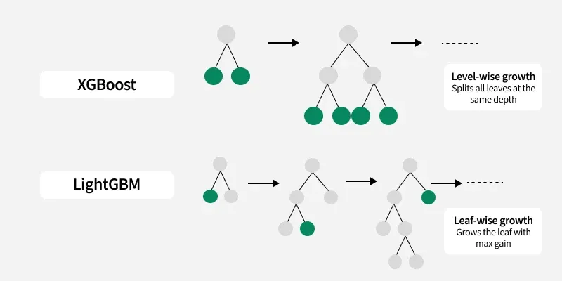

← 返回主页
📚 什么是LightGBM？
LightGBM是微软2017年推出的XGBoost轻量版。它在保持精度的同时，大幅提升了速度和内存效率。

🔑 核心优化
- 直方图算法：减少Gini计算，加速分裂
- 叶节点分裂（Leaf-wise）：不像XGBoost限定高度，而是根据信息增益选择最优叶子节点，可能形成很长的路径
- 类别特征优化：直接处理类别特征，无需one-hot
- EFB捆绑：互斥特征捆绑，减少特征数量
💡 通俗理解：XGBoost是F1赛车，LightGBM是更轻、更快的F1赛车。它用更聪明的方法减少计算量（直方图），用更灵活的方式长树（叶子优先而不是层级限定），所以速度更快、内存更省。
📊 性能对比
| 特性 |
XGBoost |
LightGBM |
| 分裂方式 |
Level-wise（按层） |
Leaf-wise（按叶子） |
| 特征处理 |
预排序 |
直方图 |
| 速度 |
快 |
更快（3-5倍） |
| 内存 |
较高 |
更低 |
🎯 适用场景
LightGBM特别适合：
- 大数据集（百万级样本）
- 内存受限的环境
- 需要快速迭代的场景
- 有类别特征的数据